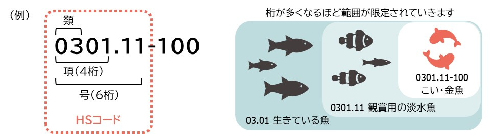
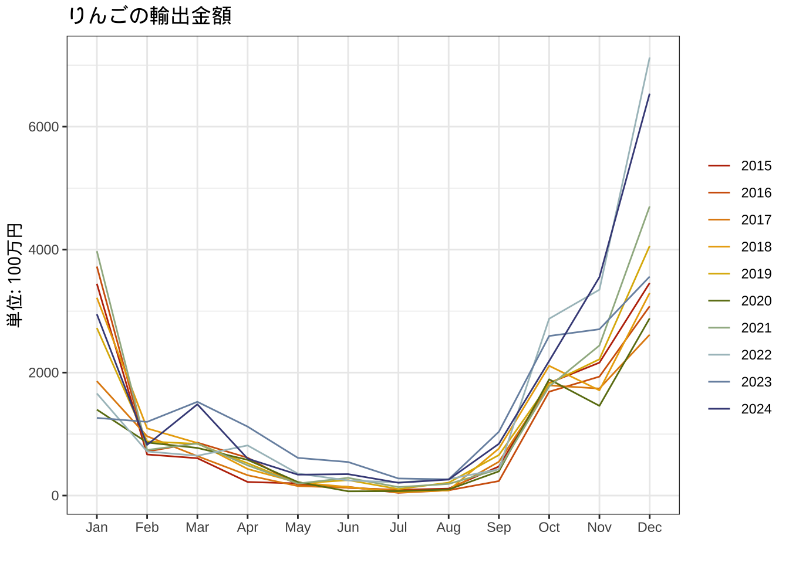
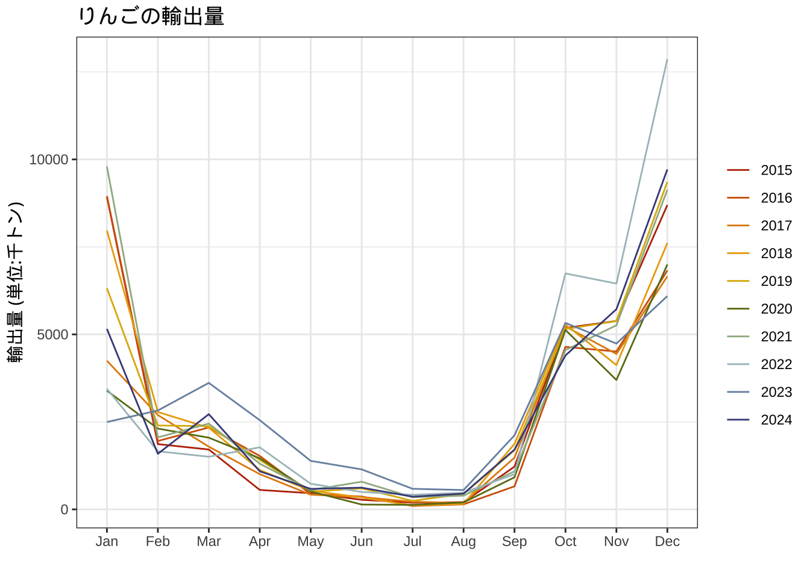
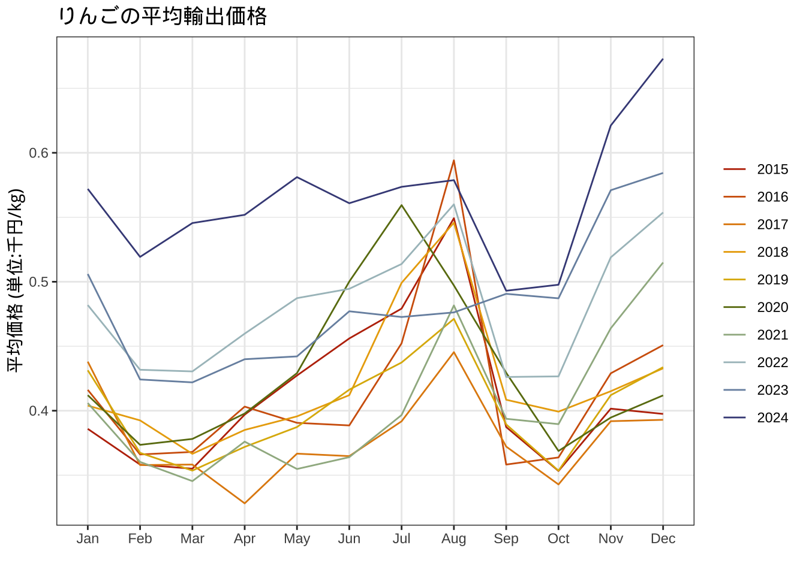
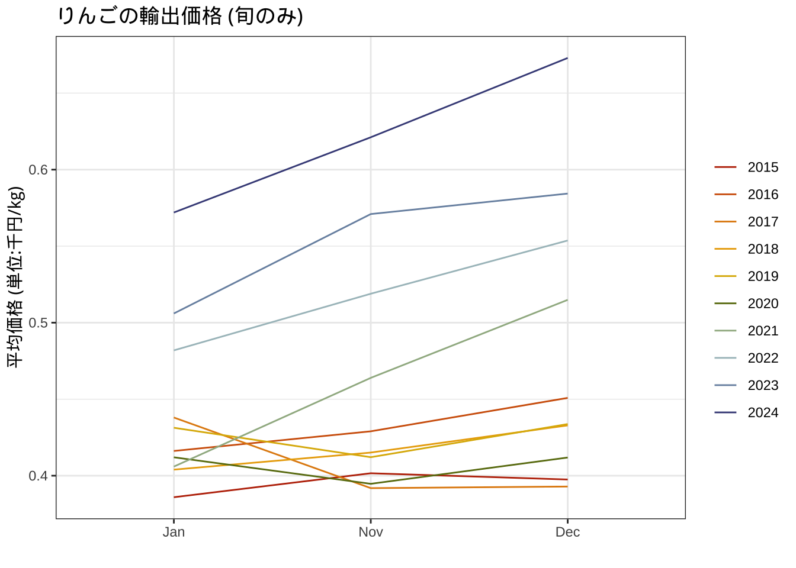
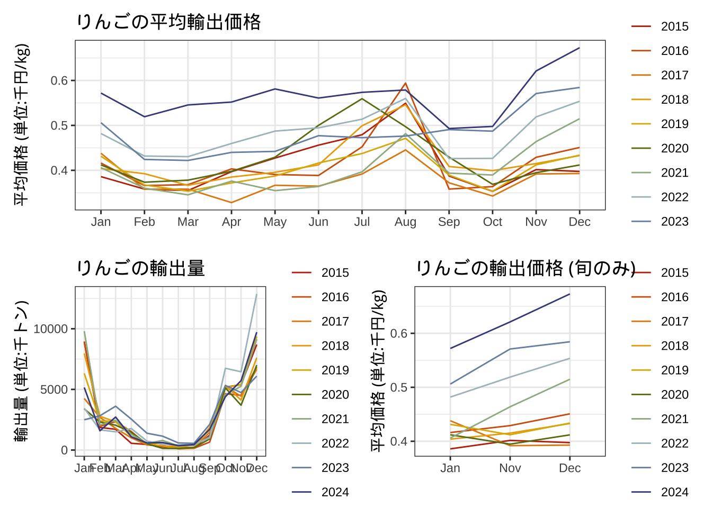

chapter: 6 可視化(3)：貿易統計の可視化
ggplot2による可視化の応用編として、日本の貿易統計の可視化を行います。以下では、「りんご」の輸出を例に解説します。
# ライブラリコマンドでの読み込みは毎回必要
library(tidyverse)
library(readxl)
library(lubridate)
library(MetBrewer)
library(patchwork)
#ウィンドウズユーザー向けの日本語フォント
#windowsFonts(YuGothic = windowsFont("Yu Gothic"))
#theme_set(theme_gray(base_size = 10, base_family = "YuGothic"))6.1 貿易統計とは
財務省によると、貿易統計とは、「貿易統計は、経済統計に関する国際条約及び関税法に基づき、我が国の貿易の実態を正確に把握し各国の外国貿易との比較を容易にすることにより、国や公共機関の経済政策、私企業の経済活動の資料に資することを目的に作成、公表及び閲覧されるもの」とされています。
国際貿易では、あらゆる物品が取引されるため、これらを効率的に分類するための世界共通のコードが不可欠です。貿易される物品を統計品目表の該当する箇所に当てはめる作業は品目分類と呼ばれています。
代表的な品目分類のコードがHS品目表です。これは国際条約に基づくコードで、日本をはじめ160カ国・地域が加盟しています。HS品目表は、貿易統計のためのデータ収集のほか、関税率の設定などさまざまな用途で利用されています。

品目分類は、ここで検索できます。
6.2 データの読み込み
# 変数の対応関係
# Year --> 年
# Month --> 月
# Quantity2 --> 輸出されたりんごの量 (単位:トン)
# Value -->輸出されたりんごの金額 (単位:千円)
# sumPrice ---> 金額を量で割ったもの (価格と考える)
#ウェブサイトから直接ダウンロードする場合
url2<-"https://yamamoto-masashi.github.io/DSlec/DBappleAll.xlsx"
download.file(url2,destfile="DBappleAll.xlsx")
# エクセルファイルの読み込み
# ヘッダ部分を読み飛ばしている
# sheet=1を変更することで別のシートも読める
DBappleAll<-read_excel("DBappleAll.xlsx",sheet=1)このままでは月名が日付として認識されないので工夫する。
6.3 りんごの輸出データの可視化
2015年から2024年のりんごの輸出金額は以下のとおりです。
# 価値
DBappleAll |>
ggplot()+
geom_line(aes(x=Month,y=Value/1000, color=factor(Year),group=factor(Year)))+
theme_gray(base_family = "HiraKakuPro-W3")+
ylab("単位: 100万円")+xlab("")+
scale_color_manual(values=met.brewer("VanGogh2", 10))+
labs(color="")+ggtitle("りんごの輸出金額")+
theme_bw()->g1
g1
次に輸出量を可視化する。年末年始に輸出量が増加している傾向がみてとれる。
# 量
DBappleAll |>
ggplot()+
geom_line(aes(x=Month,y=Quantity2/1000, color=factor(Year),group=factor(Year)))+
theme_gray(base_family = "HiraKakuPro-W3")+
ylab("輸出量 (単位:千トン)")+xlab("")+
scale_color_manual(values=met.brewer("VanGogh2", 10))+
labs(color="")+ggtitle("りんごの輸出量")+
theme_bw()->g2
g2
続いて価格を可視化する。これをみると、りんごの輸出価格は少しずつ上昇していることがわかる。
# 価格
DBappleAll |>
ggplot()+
geom_line(aes(x=Month,y=sumPrice, color=factor(Year),group=factor(Year)))+
theme_gray(base_family = "HiraKakuPro-W3")+
ylab("平均価格 (単位:千円/kg)")+xlab("")+
scale_color_manual(values=met.brewer("VanGogh2", 10))+
labs(color="")+ggtitle("りんごの平均輸出価格")+
theme_bw()->g3
g3
# 旬の価格
DBappleAll |>
filter(Month %in% c("Nov","Dec","Jan")) |>
ggplot()+
geom_line(aes(x=Month,y=sumPrice, color=factor(Year),group=factor(Year)))+
theme_gray(base_family = "HiraKakuPro-W3")+
ylab("平均価格 (単位:千円/kg)")+xlab("")+
scale_color_manual(values=met.brewer("VanGogh2", 10))+
labs(color="")+ggtitle("りんごの輸出価格 (旬のみ)")+
theme_bw()->g4
g4
４つのグラフを一つのファイルに
